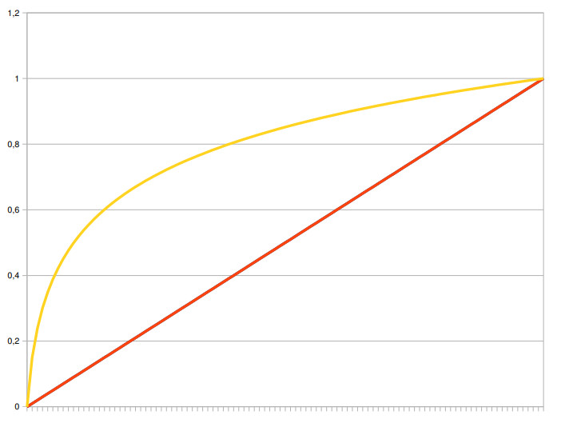

Aula 3 (2019-04-15)
Dados Multimídia
Para estudar os sistemas multimídia distribuídos, é necessário conhecer como as diversas mídias são representadas digitalmente.
Algumas mídias principais são áudio, imagem, vídeo e texto. Focaremos mais em mídias que não vemos muito durante o curso, como principalmente áudio, vídeo e até textos.
- PDI → Imagem e vídeo;
- NLP (Natural Language Process) → textos.
Áudio
-
Áudio é causado por ondas mecânicas longitudinais que alcançam o tímpano;
-
Ondas tranversais são ondas que a vibração para gerar a onda se da em uma direção; mas onda se propaga em uma direção perpendicular a vibração;
-
Já ondas longitudinais são ondas que a vibração para gerá-las tem a mesma direção da propagação;
-
Quando a frequência do distúrbio de ar está na faixa de 20 Hz (baixo) a 20.000 Hz (alto) ele é audível. A maioria dos sistemas multimídia trabalha com esta faixa de frequência. Teste de audibilidade: https://www.youtube.com/watch?v=H-iCZElJ8m0;
-
Outro parâmetro usado para a medição do som é a amplitude (medido em decibéis - dB). A variação que causa o som leve ou pesado (intensidade). Por exemplo, o limiar da dor é de 100 a 120 dB;
-
Frequência = 1 / período;
-
Frequência = velocidade * comprimento de onda;
-
A onda sonora é uma onda contínua no tempo;
-
O padrão de oscilação, como mostrado na Figura 1., é chamado de forma de onda (waveform);
Figura 1. Forma da onda.
-
A forma de onda é caracterizada por um período e amplitude;
-
O período é o tempo necessário para a realização de um ciclo, ou seja, intervalo de tempo que, num fenômeno periódico, separa a passagem do sistema por dois estados idênticos;
-
Como a onda de som ocorre naturalmente, ela nunca é perfeitamente suave ou uniformemente periódica como a forma de onda da Figura 1.
-
O timbre do som também caracteriza a onda (Figura 2.)
 Figura 2. Diferentes formas que caracterizam
o timbre.
Figura 2. Diferentes formas que caracterizam
o timbre.
Onda mecânica som para sinal elétrico e vice-versa
-
Microfone e Alto-Falantes;
-
Alto-Falante tem um imã e uma bobina móvel para receber o sinal elétrico variável, ao variar o sinal elétrico, a bobina se mexe devido ao imã ao seu redor, reproduzindo o sinal elétrico em ondas mecânicas devido a esse movimeto.
Digitalização do Áudio
Para que sistemas computacionais processem e comuniquem sinais de áudio, o sinal elétrico deve ser convertido em um sinal digital.
O mecanismo que converte o sinal de áudio digital em analógico é chamado de Conversor Analógico para Digital (CAD), ou digitalização. Digitalização aqui é o processo envolvido na transformação de sinais analógicos (sinal elétrico gerado pelo microfone) em sinais digitais.
Esta conversão é realizada pelos dispositivos chamados de CODECs (Codificador/Decodificador). Para a conversão de sinais analógicos em digital é necessária a realização de três passos: amostragem, quantificação e codificação.
 Figura 3. Conversão A/D:
(a) sinal analógico; (b) pulsos de amostragem; (c) valores amostrados e
intervalos de quantificação; (d) sequência digital.
Figura 3. Conversão A/D:
(a) sinal analógico; (b) pulsos de amostragem; (c) valores amostrados e
intervalos de quantificação; (d) sequência digital.
Amostragem
Nesta etapa um conjunto discreto de valores analógicos é amostrado em intervalos temporais de periodicidade constante, como apresentado na Figura 3(a).
A freqüência de relógio é chamada de taxa de amostragem ou freqüência de amostragem.
Cada uma das amostras é analógica em amplitude: ele tem qualquer valor em um domínio contínuo. Mas isto é discreto no tempo: dentro de cada intervalo, a amostra tem apenas um valor.
Segundo o teorema de Nyquist: se um sinal analógico contém componentes de frequência até f Hz, a taxa de amostragem deve ser ao menos 2f Hz.
Se o sinal analógico tiver componentes de frequência maiores que a frequência de Nyquist ocorre a pseudonímia (aliasing). Nesta situação, estes componentes maiores que 2f são convertidos em freqüências mais baixas na reconstrução. Para evitar isto, são utilizados filtros anti-pseudonímia, trata-se de filtros do tipo passa baixa para eliminar as frequências maiores que a de Nyquist.
Como filtros não são perfeitos, é necessário filtrar frequências um pouco maior que 2f. Por exemplo, a taxa de amostragem de CD-audio é de 44,1 kHz, e dos tapes de áudio digital (DAT) é de 48kHz para cobrir uma faixa audível de freqüência de 20 kHz.
O sistema telefônico foi projetado para transmitir frequências da voz humana. A voz humana gera frequências entre 15Hz e 14kHz.
Na telefonia, por razões econômicas, a faixa de voz escolhida foi entre 300 e 3400 Hz (largura de banda de 3,1kHz), o que garante 85% de inteligibilidade (palavras compreendidas) e 68% de energia da voz humana.
No entanto, para evitar a interferência entre sinais que fluem em canais vizinhos, a largura de banda de um canal de voz foi definida em 4KHz. No sistema telefônico é comum usar uma frequência de amostragem de 8 kHz para converter este sinal em digital.
Quantificação
O processo de converter valores de amostras contínuas em valores discretos é chamado de quantificação. Neste processo nós dividimos o domínio do sinal em um número fixo de intervalos. Cada intervalo tem o mesmo tamanho e recebe um número. Na Figura 3(c) estes intervalos são numerados de 0 a 7. A cada amostra dentro de um intervalo é atribuído o valor do intervalo.
Quando o mesmo tamanho de passo de quantificação é usado na conversão A/D sem olhar para a amplitude do sinal, o processo de conversão é dito uniforme. Este processo de conversão A/D é chamado de modulação por pulso codificado (PCM - Pulse Coded Modulation). Algumas vezes, nem todos os valores amostrados são retidos após a quantificação. No caso ilustrado pela Figura 3(c), todos os valores amostrados foram retidos.
- Para quantização uniforme valores em 8 bits → 256 níveis diferentes ou 16 bits → 65.536 níveis diferentes.
Quantificação não linear
O PCM é simples, mas não é eficiente: a quantificação linear resulta em uma mais elevada SNR na região de amplitude de sinal mais altas que na região de mais baixas amplitudes. Esta elevada SNR na região de amplitude mais altas não aumenta a qualidade percebida. Isto, pois nós somos mais sensíveis às componentes de amplitude mais baixas.
- SNR medido em dB (decibel, assim como a amplitude do áudio). Quanto maior o valor, menor o ruído.
A fim de explorar este fato o tamanho de passo de quantificação que aumenta logaritmicamente com a amplitude do sinal é muito usado na quantificação de sinais de voz. Neste caso, os passos de quantificação são menores quando a amplitude é baixa. Esta técnica de compressão realiza uma transformação de um sinal linear em um sinal não linear (Figura 4.)
-
Lei de Weber: descreve a relação entre as magnitudes físicas de um estímulo e a intensidade percebida deste estímulo:
- Diferenças que são igualmente percebidas têm valores proporcionais em relação aos valores absolutos dos estímulos;
- Exemplo: se podemos sentir um crescimento no peso de 5 para 6 Kg então, se ao invés, iniciarmos com 10 libras, então serão precisos 12 libras para sentirmos uma diferença.
-
Como o ouvido humano percebe melhor frequências mais baixas, pode-se usar uma quantização não uniforme para aumentar o número de amostras destas frequências mais baixas e diminuir o número de amostras das frequências mais altas.
-
O teste de audibilidade (vídeo) começa acelelar conforme o aumento das frequências.
 Figura 4. Função linear x não linear (logaritmica).
Filtragem de áudio
-
Antes da amostragem e conversão analógicadigital (AD), o sinal de áudio é normalmente filtrado para remover frequências indesejadas;
-
As frequências que são mantidas dependem da aplicação do sinal de áudio;
-
O tipo de filtro mais comumente empregado é o filtro passa-banda (ou passa-faixa) elimina → frequências mais altas e mais baixas, deixando intacta apenas uma banda de frequências.
-
Quando um sinal digital é convertido para uma saída analógica (conversão DA), ele é novamente filtrado para eliminar frequências altas:
-
Um sinal quantizado é basicamente um sinal descontínuo. Teoricamente, entre uma descontinuidade e outra pode haver diversas frequências;
-
Usa-se um filtro passa-baixas eliminar altas → frequências.
-
Codificação
A codificação consiste em associar um conjunto de dígitos binários, chamado de code-word, a cada valor quantificado. No caso da Figura 3.(d), oito níveis de quantificação são usados. Estes níveis podem ser codificados usando 3 bits, assim cada amostra é representada por 3 bits.
Taxa de bits
Taxa de bits é definida como o produto entre taxa de amostragem e o número de bits usados no processo de quantificação.
- Por exemplo, supondo uma frequência de 8k Hz e 8 bits por amostra, a taxa de bits necessária à telefonia é igual a 8000x8 = 64 kbps.
Exemplos de qualidade de áudio digital
A tabela abaixo mostra a taxa de amostragem e o número de bits usados para cada amostra para várias aplicações de áudio. Relembrando, quanto maior a taxa de amostragem e maior o número de bits por amostragem, maior é a qualidade do áudio restituído, mas com isso maior é a taxa de bits. Note na tabela que para áudio estéreo, tal como CD-Audio, dois canais são necessários.

Hoje com a largura de banda que temos, podem teoricamente ouvir qualidade de CDs pela internet; cerca de 15 anos atrás isso era completamente inviável.